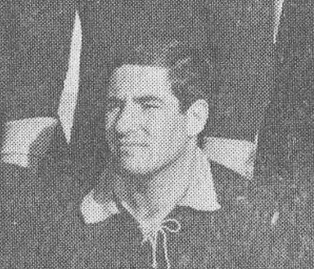

Mark Thomlison
Early 1990s · Died 28 February 2009, aged 36
A well respected team-mate from the early nineties, on the roster in 1991–92 and 1992–93. He was 36 — far too early.
William K. “Chip” Maxwell
Founder and first President · 1966–1968 · Died 31 January 2010
One of the two men who founded the Missouri University Rugby Club in the fall of 1966, an Air Force veteran from Creve Coeur who had played with the Ramblers in St. Louis before bringing the game to Columbia. John Leet, who was at the first practice, remembered him as inspirational.
Keith “Ike” Eickenhorst
Treasurer · 1966–1968 · Died before October 2011
Treasurer of the early club. Marking the club’s 45th anniversary in October 2011, Dan McGuire noted that he and Chip Maxwell had both “checked out early.”
Rob “Big Bob” Wilson
Forward · 1980s · Died before October 2012
Alistair Young asked for a glass to be raised in his honour at the 2012 Old Boys match — “a much loved Old Boy who is no longer with us. A great forward and a wonderful friend.”
Dr. Gino Tutera
1966–1968 · Died 7 November 2015
One of the original team members and the club’s first Vice-President. “A very tough ruger and an accomplished doctor,” wrote Jim Clark, who had known him since their youth in Kansas City. He practised as an OB/GYN.
Mike Holly
Late 1970s · Died January 2017
Played through the late seventies, including Don Corwin’s first season in 1979, and went on to the Columbia Outlaws and the St. Louis Falcons. He did not drink, which made him the club’s designated driver on road trips — “a sober chauffeur with a lead foot.” His daughter Megan later captained the Mizzou women’s club.
Larry “Peevey” Dickerson
Early 1970s · Died 19 February 2017
Born in St. Louis in 1947 and a William Jewell graduate, he joined the club during graduate school. He collected nicknames — “Lightning Larry Peevey,” allegedly after being struck by lightning leaving practice at the old Reactor Field. He moved to Alaska in the late seventies, played and toured with the Oosiks in New Zealand, Australia, Scotland and Argentina, and refereed to USA RFU “B” level.
Tim Tajkowski
1990s · Died 2017
Played for Mizzou for several years. “Played to his abilities and was an all around proper club man,” Fred Cole wrote of him.
Scott Wirtz
Late 1980s · Died 16 January 2019
Played in the late eighties and went on to the St. Louis Ramblers. A former Navy SEAL working as a civilian employee of the Defense Intelligence Agency, he was killed in the suicide bombing at Manbij, Syria.
Charles “Charlie” Stecher
Hooker · 1966–1972 · Died 17 November 2019
A member of the original 1966 side and one of the club’s most faithful correspondents in later years, turning up in the Old Boys group to wish the current team well before almost every match. He is survived by his wife Annie and daughters Kim and Michele.
Isaac Wilhelm “Ian” Hermann
Coach · 1979–1990s · Died February 2020
Ian Hermann was more than a coach; he was an icon of Mizzou Rugby. He arrived in Columbia near the end of the 1970s and guided the club for the better part of two decades, leaving an influence that extended far beyond wins and losses. Don Corwin played for Ian during his first two seasons in charge and, decades later, returned to coach the club himself—a fitting measure of how Ian’s leadership continued through the generations of players he shaped.
Ask those players what they remember, and many will begin with the hill at Reactor Field. Ian ran them up and down it until some were sick, but those who returned discovered they were becoming more than teammates—they were becoming a rugby family. When Clint Cockrill arrived at his first practice in 1995, a veteran offered three pieces of advice: “Call Ian ‘Sir.’ He is always right. Don’t argue, and do as you are told.” Ian demanded discipline, toughness, and commitment, and he was known to correct a lazy ruck with the persuasive assistance of a well-placed stick. His methods could be uncompromising, but behind them was a coach who believed his players were capable of more than they yet believed themselves to be.
Yet beneath the hard practices, sharp corrections, and legendary humor was a mentor whose confidence could change the course of a young man’s life. Fred Cole thought so much of Ian that he named his son after him. “You showed confidence in me; you put forth the mantle of leadership upon me,” Fred wrote. “You mentored me, you blessed me and my family… Coach, you’re one of the most positive influences of my life.” Warren Stemme remembered how deeply proud Ian was simply to have the opportunity to coach at Mizzou. “You can see that in his eyes in all the photos,” he recalled. Ian did not merely teach men how to play rugby; he taught them about leadership, perseverance, loyalty, and the responsibility they carried toward one another.
When Ian died, his former players returned to Columbia wearing the old black and gold. They came from different teams, different years, and different chapters of his life, but they stood together as one club and one brotherhood. “I can only imagine the half-cocked smile Coach would share if he saw us all in such solidarity,” Tyler Lasley wrote that week—“a man surrounded by all the men he helped shape.”
That is Ian Hermann’s legacy: not simply the years he coached, the matches he won, or the demanding practices his players never forgot, but the generations of Mizzou ruggers who became stronger men because he believed in them. His name lives on through the MRAA scholarship, but his true memorial can be found in the friendships, traditions, stories, and lives he helped build. Ian will forever remain part of the heart and soul of Mizzou Rugby.
Ed Lampitt
1968–1970 · Died April 2020
Man of the Match at the 1969 Cherry Blossom tournament in Washington, D.C. He was also captain of Mizzou wrestling and a College Wrestling Hall of Famer, a Navy pilot, an engineer and a dentist. “Brother, Mate and Friend,” wrote Michael Fulk.
Matt Whiteaker
1994–1999 · Died 2022
Remembered for the trips to Lawrence and a house in Millstadt where team-mates crashed. The Old Boys raised a fund in his memory for his daughter, Sophia.

Stan Feldman
Hooker · 1966–1967 · Died 23 March 2022
A hooker in the club’s very first sides. After University City High School he took undergraduate and graduate degrees at Missouri, and it was in veterinary school that he met his wife, Nancy.
He owned two animal clinics — his primary practice in Clayton and an expansion clinic in Bridgeton — and for many years volunteered several days a week at the APA, spaying and neutering homeless pets, often watched by his sons Michael and Andrew, who were thrilled by their frequent invitations to “watch surgery” in their father’s well-worn scrubs.
An avid sports fan who enjoyed everything from tennis to rugby, he took up photography later in life both behind the lens and as a collector, and earned a fine arts degree to “jump start his learning” before retirement. His family remembered him as “a lover of learning, an experimenter, a supporter where support was needed and a bolster when independence was called for… a man whose good nature is unequalled and whose kindness remains unmatched.”
Nick Baker
Prop · 1976–1980 · Died March 2022
Captained the club for a year and went on to a long career with the St. Louis Ramblers, recruiting several of his fraternity brothers to the game along the way. “One hell of a prop and a guy you wanted on your side,” wrote Don Corwin. “No mistaking his voice on or off the pitch.”
Bruce Beckett
1967–1968 · Died November 2022
Played in the club’s second and third seasons. He served in the Marine Corps, graduated from the Mizzou law school in 1975 and practised law in Columbia until 2021.
Compiled from notices posted by team-mates in the Mizzou Rugby Old Boys group.